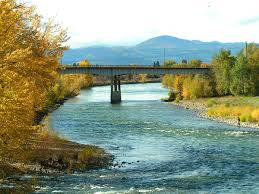

Clark Fork
Paralleling I-90 for most of it's length, the Clark Fork River is one of the longest rivers in Montana flowing
more than 280 miles through every kind of terrain imaginable. Beginning near Deer Lodge, Mt, the Clark Fork gains
size and flow as it passes through the heart of downtown Missoula with the influx of the Bitterroot, Blackfoot,
and Rock Creek adding mass to the river. The Clark Fork is broken into two distinct sections known as the 'Upper Clark'
referring to the section of river above Missoula, and the 'Lower Clark' referring to the section of river downstream
of Missoula. The Upper Clark is smaller and home to a higher population brown trout who love to chase streamers and
crush terrestrials. On the Lower Clark, massive pods of rainbows and cutthroat are ready to eat a finely presented
tiny dry fly. These two totally different fisheries offer a lifetime of fishing opportunity all within one large river
that completes Missoula.
